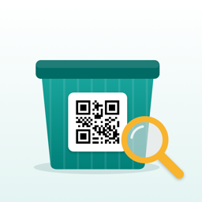

QR labels for your storage totes: scan a tote to see what's inside, search for any item, and share your totes with family.
Open a ticket on the support page on GitHub. Tell us your device, iOS version and what happened, and we'll get back to you.
Which labels can I print on? In Labels, choose Large (6 per page), Medium (12) or Small (30, the size of Avery 5160 address labels) on US Letter paper. You can also save the sheet as a PDF.
The scanner doesn't see my label. Make sure the label is well lit and fills a good part of the camera view. You can also type the code printed under the QR code.
How do I ask Siri? Say “Where is something in ToteTag?” and then say what you're looking for. You can also add the “Find an Item” shortcut in the Shortcuts app.
How do I group totes by room? On My Totes, tap the ⋯ menu and choose Location. Totes are grouped by the part of the location before “·”, “/” or “,”, so “Garage · Shelf 2” goes under Garage.
How does packing mode work? Open a tote, tap ⋯ and choose Packing Checklist. Tick items as they go in, or add new ones as you pack. Tap Done Packing when you're finished.
How do I share totes with my family? Everyone needs to be signed in to iCloud. On My Totes, tap ⋯ → Family Sharing → Invite Family Members and send the invitation. When someone joins, their own totes are added to the shared set.
The developer collects no data. Read the full privacy policy.